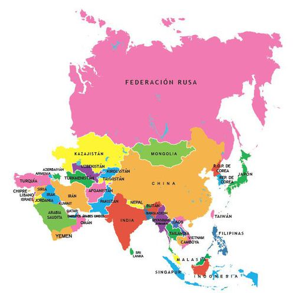
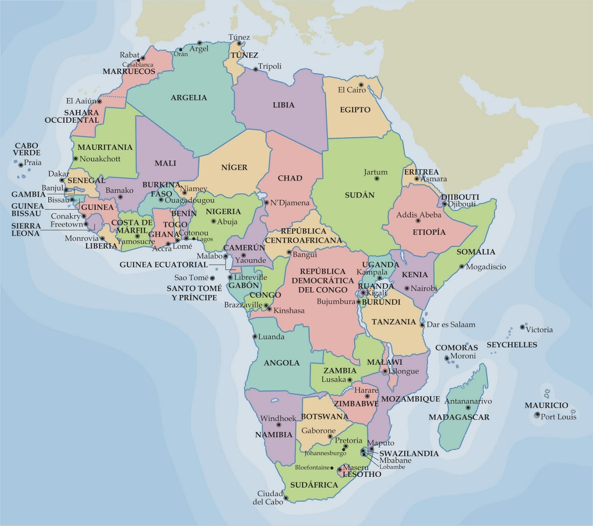
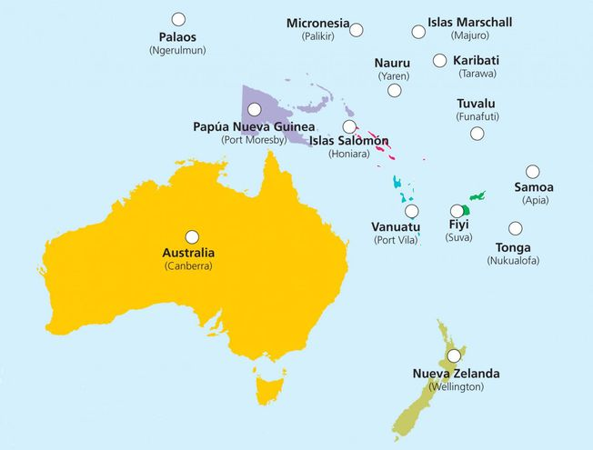
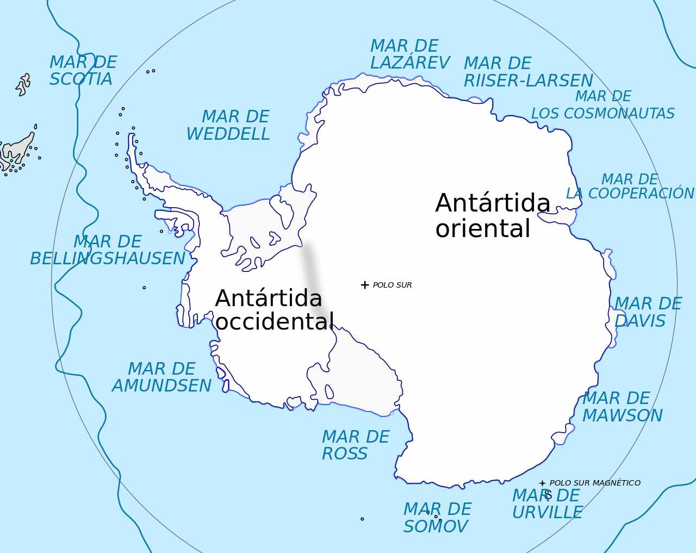

AMERICA |
EUROPA |
ASIA |
AFRICA |
OCEANIA |
ANTARTIDA |
|
| 1. Canadá2. Belice3. Nicaragua4. Venezuela5. Chile | • Bulgaría• Dinamarca• Noruega• Ucrania• Irlanda | A. FilipinasB. ArmeníaC. BirmaniaD. MalasiaE. Vietnam | Ghana Angola Zimbabue Uganda Kenia | I. FiyiII. NauruIII. TongaIV. Nueva ZelandaV. Paolos | °La antartida Argentina(Argtentina)°La dependencia Rosss(Nueva Zelanda) °Adelie Land (Francia)°Territorio AntárticoAustraliano (Australia)°Islandia Pedro l °Tierra de la Reina Maud (Noruega)°Antartida Chilena (Chile)°Marya Byrd (sinpertenencia) | |
|  |  |  |  | |||